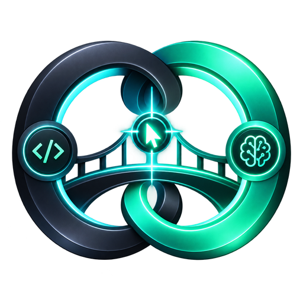

Azure Cursor Bridge
Your Azure models, ready for Cursor and Codex.
Cursor connection
Loading endpoint…
This is a permanent URL — it stays the same across restarts and reboots. Use it as the OpenAI base URL override in Cursor and the provider base URL in Codex. Keep this computer on while using the bridge.
Changes apply to the next request. Higher effort can take longer and use more tokens.
These are defaults for bare model names. Clients can override per request — effort-suffixed models in Cursor (e.g. azure-astra-high), the reasoning selector in Codex. See “Control reasoning effort” under Endpoint details.
Full Azure context is available through the bridge. Cursor controls the history it sends and may compact earlier. No local truncation is applied.
Custom models
Expose any other deployment on your Azure resource as a bridge model. Pick the protocol that matches the deployment: OpenAI (responses) for GPT-family models, Anthropic (messages) for Claude-family models. New models are live immediately, appear in /v1/models with effort-suffixed variants, and support pricing and usage tracking — add the model id to Cursor's model list to use it there.
| Id | Label | Deployment | Protocol | Context | Default effort | Actions |
|---|
Claude account
Models on the Claude CLI protocol run locally through the Claude Code CLI using your Claude subscription — no Azure involved. They are plain-text chat models: client tool calling is not forwarded, so use them for Ask/chat rather than agent mode.
—Endpoint details
——Authorization: Bearer <owner key or guest key>—Routes: GET /health (no auth) · GET /v1/models · POST /v1/chat/completions · POST /v1/responses. Models: azure-astra (GPT-6 Astra) and azure-opus (Claude Opus 5). Add an effort suffix to pick reasoning per request — azure-astra-low, azure-opus-max, etc. (low / medium / high / xhigh / max). Bare model names use the Reasoning mode saved above; a client-sent reasoning setting (Codex) is honored too.
Connect Cursor
- Cursor Settings → Models → API Keys: enable OpenAI API Key and paste the bridge key (use “Copy bridge key” above).
- Turn on Override OpenAI Base URL and paste the public base URL (use “Copy base URL” above).
- Add custom models named
azure-astraandazure-opus, then pick one in chat. - To control reasoning from Cursor's model picker, add effort-suffixed names like
azure-astra-highorazure-opus-max— the suffix overrides the bridge's default effort for that request.
Connect Codex
In ~/.codex/config.toml, point the provider at the bridge and select a bridge model:
Set the AZURE_CURSOR_BRIDGE_API_KEY environment variable to the bridge key.
Claude CLI models — names & effort
These models run through the local Claude Code CLI on your Claude subscription. Use them from any client exactly like the Azure models — same base URL, same bridge key. Model names:
claude-fable— Claude Fable 5.1 (most capable)claude-opus— Claude Opus 5 (also available Azure-billed asazure-opus)claude-sonnet— Claude Sonnet 5claude-haiku— Claude Haiku 4.5 (fastest)
Effort works like every bridge model — suffix the name (claude-fable-max, claude-haiku-low), send a client reasoning setting, or rely on the model card default. For Claude models, effort maps to a thinking-token budget: low = thinking off, medium = 4,096, high = 16,384, xhigh = 32,768, max = 63,999 thinking tokens.
Requirements & limits: the Claude CLI must be installed and logged in on the bridge machine (Overview → Claude account → “Log in with Claude”). Responses are plain text — client-side tool definitions are not forwarded, so agent modes that need tool calls should use the Azure models. Usage draws on your Claude subscription limits, including requests made with guest keys.
Control reasoning effort
Both models support five reasoning levels: low, medium, high, xhigh and max. Higher levels think longer and use more output tokens. There are three ways to choose, and the most specific one wins:
- Effort in the model name (strongest) — pick a suffixed model such as
azure-astra-low,azure-astra-maxorazure-opus-high. This is how you control effort from Cursor's model picker: all ten variants are registered there, alongside the bare names. Works from any OpenAI-compatible client. - The client's own reasoning setting — Codex has a native effort selector next to the model name and sends your choice with every request; the bridge honors it. API callers can send
reasoning_effort(chat) orreasoning.effort(responses). - The bridge default (weakest) — the Reasoning mode dropdowns above apply when a bare model name is used and the client sends no preference. This is what Cursor's bare
azure-astrauses.
Every request's resolved effort is shown in Recent requests below, so you can confirm which level actually ran.
Test from a terminal
Azure upstream key & versions
The bridge authenticates to Azure with the key shown under “Azure upstream key”. Keys are stored DPAPI-encrypted per version in the bridge state folder; nothing is kept in plain text. Reveal decrypts and shows a key, Test against Azure sends one tiny real request (a few tokens) to confirm Azure accepts it, Save as new version stores a pasted key as the next version and activates it, and Activate on an older version reverts to it. Activation rewrites the key file and restarts the proxy, so the change applies to the next request. The active version can never be deleted.
Cost estimation
The bridge records exact token usage (input, cached input, output) for every request into daily totals, and multiplies them by the rates you save under “Usage & cost”. Cost per request = fresh input × input rate + cached input × cached rate + output × output rate (rates are per 1 million tokens). Azure serves repeated prompt prefixes from its cache at a lower rate, which is why cached input is priced separately — enter the cached rate from your Azure pricing page, or the full input rate if you prefer a conservative estimate. Once rates are saved, each row in Recent requests also shows its estimated cost. These figures are estimates based on the rates you entered; your Azure invoice is authoritative.
Guest keys & owner key rotation
The owner key is stored in the bridge config and never changes on its own — it is permanent until you press Rotate in “API keys & access”. Rotating invalidates the old value on the next request and copies the new one to the clipboard; afterwards paste it into Cursor (as the OpenAI API key) and update the AZURE_CURSOR_BRIDGE_API_KEY environment variable for Codex.
Guest keys are additional keys for the same endpoint with limits you control: an optional expiry set at creation, an on/off switch, Reset (new value, old one dies instantly), and Delete. The proxy re-checks keys on every request, so all changes are immediate — no restart needed. Each request in Recent requests shows which key authenticated it, with a per-key request counter in the table above.
How the endpoint works
The bridge runs locally on port 17834 and translates OpenAI-style requests to your Azure deployments (gpt-6-astra and claude-opus-5). A named Cloudflare tunnel can publish it at a permanent hostname that survives restarts and reboots; the tunnel token is stored encrypted with the OS keystore. Without a named tunnel, the bridge uses a temporary trycloudflare URL that changes on every start.
Test playground
Send a real request through the bridge to verify the endpoint end to end. Requests use your Azure quota and appear under Recent requests.
API keys & access
The owner key is permanent until you rotate it. Guest keys share the same endpoint but are controlled by you: give them an expiry, turn them off and on, reset their value, or delete them — every change applies to the very next request. Recent requests show which key each request used.
| Label | Key | Status | Expires | Requests | Actions |
|---|
Azure upstream key
The Azure endpoint and API key the bridge uses upstream. Each version snapshots both together — change the key, the endpoint, or both, and revert to any version to restore that exact pair. Keys are stored encrypted with the OS keystore. Saving or activating a version restarts the proxy automatically so it takes effect immediately.
——| Version | Added | Key | Endpoint | Note | Status | Actions |
|---|
Usage & cost
Token totals for everything that passes through the bridge, bucketed per day. Enter your Azure rates in US dollars per 1 million tokens (from the Azure portal / your agreement) and the bridge estimates cost — estimates, not invoices. Counting starts from when this feature was added.
| Period | Requests | Tokens in (cached) | Tokens out | Est. cost |
|---|
Daily history
Per-day totals and estimated spend for the last 30 days, most recent first.
| Day | Requests | Tokens in (cached) | Tokens out | Est. cost |
|---|
Recent requests
Click a request to see what made it up — where it came from, scaffolding vs conversation, Azure cache hits — and analyze it with AI. API keys are never logged; short prompt previews are kept locally on this computer for the breakdown.
| Time | Source | Model | Result | Tokens in (cached) / out |
|---|